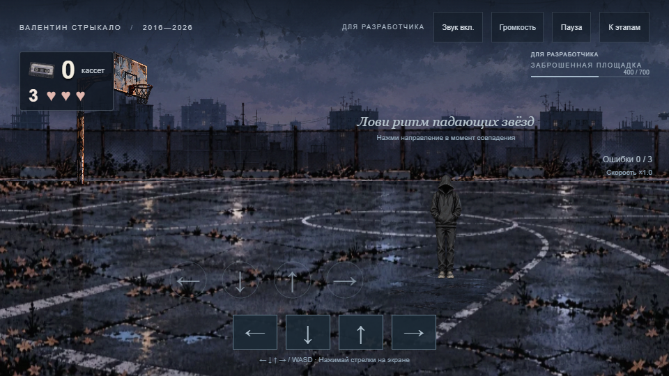
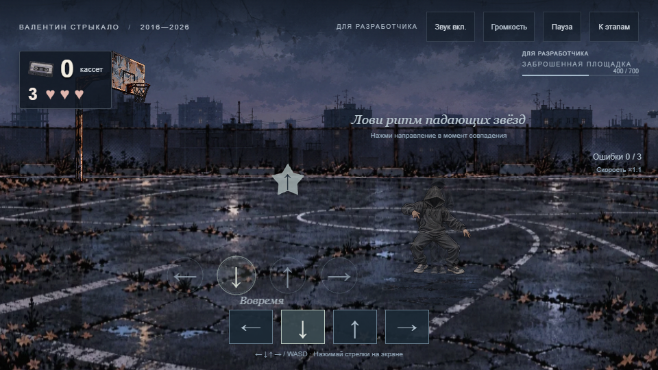
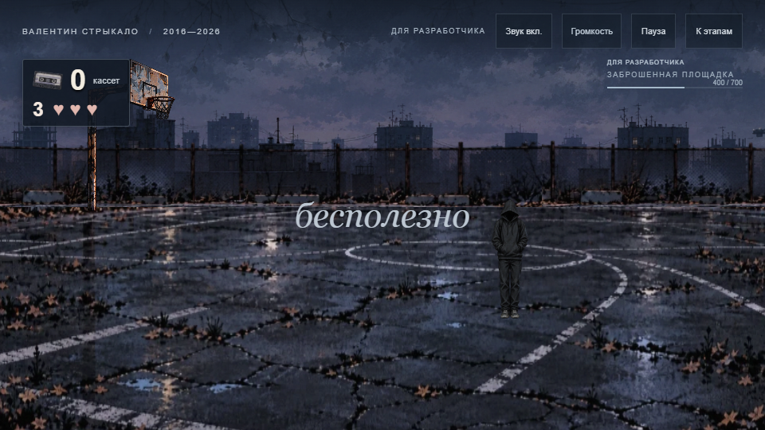
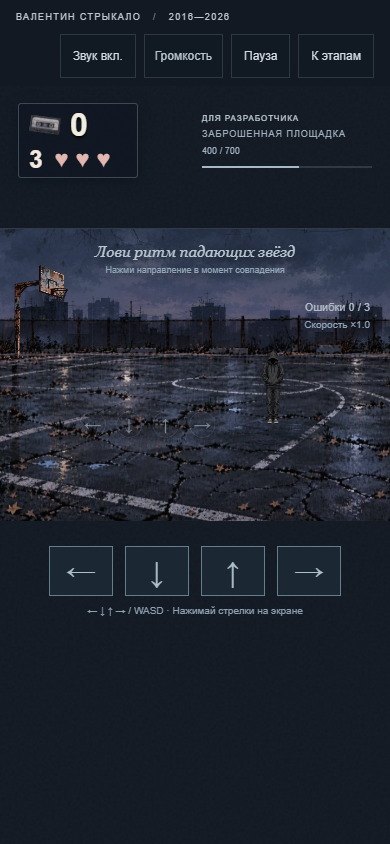
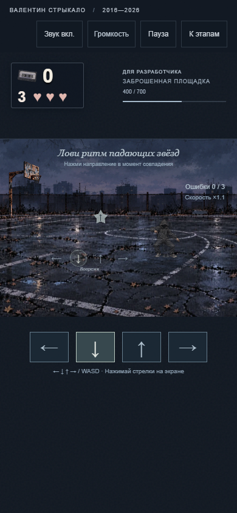
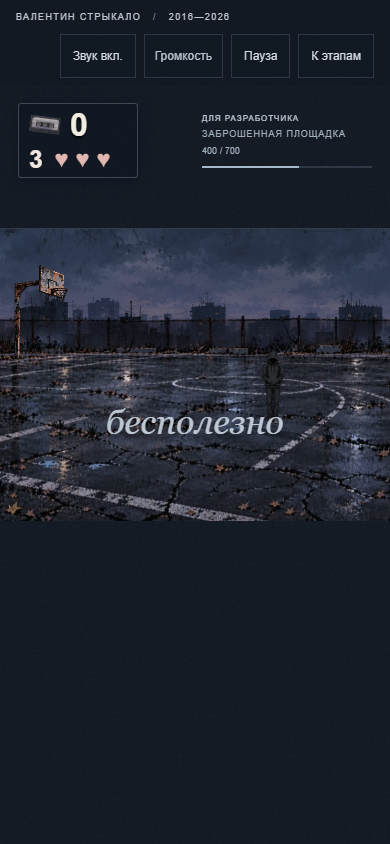
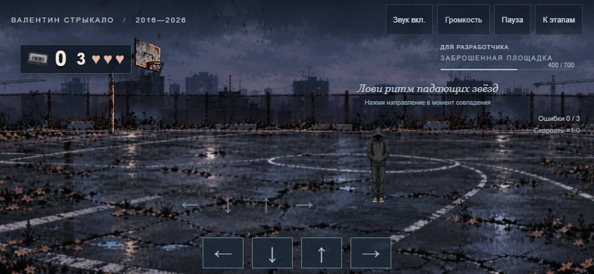
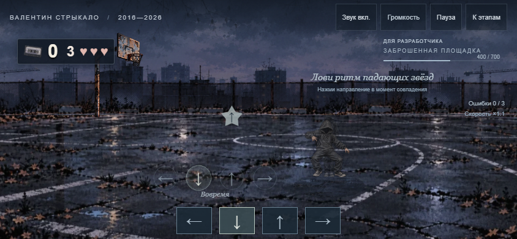
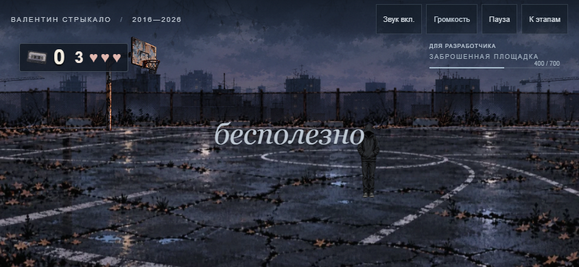

Геймплей v17
Герой +40%, составные шаги, пятое поражение. Статичные кадры не показывают плавность анимации.

Desktop · нейтральная поза
Попадание · работа ног
Только пятое поражение

Portrait · нейтральная поза
Попадание
Пятое поражение

Landscape · нейтральная поза
Попадание
Пятое поражение
Музыкальные маркеры 39,61 / 41,06 / 42,52 с требуют прослушивания. Измерения MP3 · Проверка production · Правила и ограничения